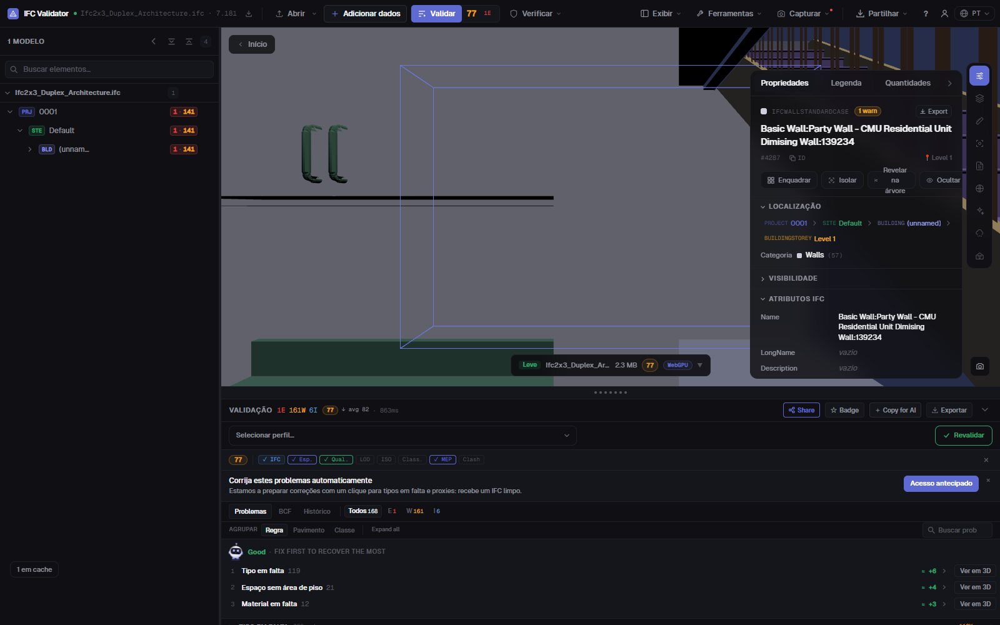
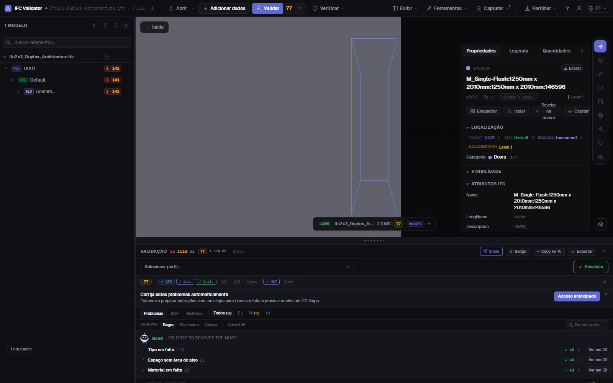

Editor IFC grátis
online, no seu navegador
Abra um ficheiro IFC, selecione um elemento e corrija o que está errado: o nome, o LongName, o valor de uma propriedade ou o piso onde está. Cada alteração pode ser desfeita e o resultado exporta-se como um IFC padrão que a sua ferramenta BIM volta a abrir. O ficheiro não sai do seu computador.
Editar um ficheiro IFC — grátis →Sem conta · Nada é enviado · No seu navegador · Grátis

O que pode fazer
Edite um IFC sem Revit, ArchiCAD nem licença
Para as correções que de outro modo devolveria ao autor: rápidas, reversíveis e guardadas como um IFC real.
Renomear elementos
Altere o Name e o LongName de qualquer elemento, ou renomeie de uma vez todos os nomes duplicados ou vazios com um padrão ({class}, {storey}, {n}).
Editar valores de propriedades
Altere o valor de qualquer propriedade que já exista nos conjuntos de propriedades do elemento (Pset_WallCommon, Psets próprios…).
Corrigir GUIDs
Regenere com um clique os GlobalId duplicados ou mal formados — o erro de exportação mais comum.
Mudar de piso
Atribua um elemento a outro contentor espacial quando foi exportado no piso errado.
Desfazer tudo
Cada alteração é um comando com desfazer e refazer; o ficheiro original não é tocado até exportar.
Exportar IFC ou GLB
Descarregue o modelo editado em IFC (mesmo esquema do original) ou em GLB para visualizadores web e RA.
Capturas

FAQ
Perguntas frequentes
Existe um editor IFC grátis online?
Sim. O IFC Viewer Online é grátis para qualquer uso, incluindo comercial. Abra a página, arraste um .ifc e edite-o no navegador — sem instalar, sem conta e sem envio, porque o ficheiro é lido localmente com WebAssembly.
O que posso alterar num ficheiro IFC?
Os nomes dos elementos (Name, LongName), os valores das propriedades existentes, os GlobalId e o contentor espacial de um elemento. Também pode renomear muitos elementos de uma vez. Não é uma ferramenta de modelação: a geometria não é editada.
O IFC editado abre no Revit, ArchiCAD ou Solibri?
Sim. A exportação escreve um IFC padrão no esquema do ficheiro aberto (IFC2x3, IFC4, IFC4x3) com as suas alterações; qualquer ferramenta que lia o original lê o editado.
O meu modelo é enviado para algum lado?
Não. Leitura, edição e exportação acontecem no navegador. Nas DevTools vê que nenhum pedido leva o ficheiro. Serve para projetos sob NDA e funciona offline depois de carregado.
Posso verificar o modelo depois de editar?
Sim — a mesma app verifica o ficheiro com 44 regras de qualidade e dá um Health Score de 0 a 100, para ver a nota subir depois das correções.
Corrija o IFC você mesmo, num minuto e sem idas e voltas.
Renomear · Editar propriedades · Corrigir GUIDs · Desfazer · Exportar IFC
Editar um ficheiro IFC — grátis →